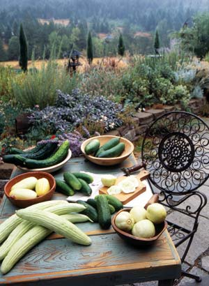
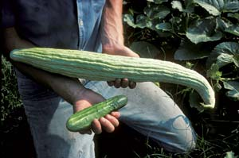
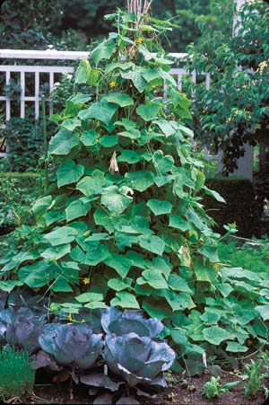
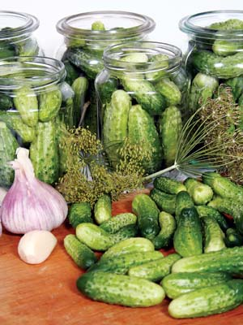
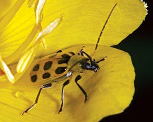
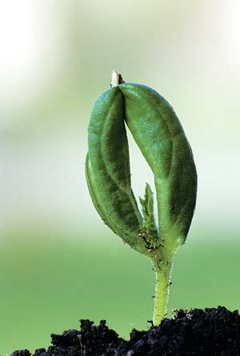
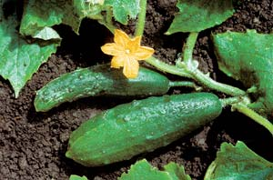
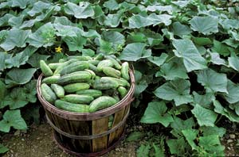
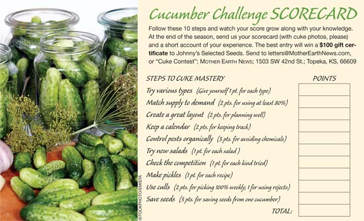

The Great Cucumber Challenge
This 10-step plan will make you a master cuke grower in just one season.
By Barbara Pleasant
June/July 2007
Cucumbers are easy to grow, but coaxing your version of a perfect crop from the garden takes strategy and organization. The exuberant vines are prone to producing all at once, so planting dates must be carefully planned, and you will need a way to preserve the cukes you don’t eat fresh. Most gardeners must defend their plants from yellow and black cucumber beetles, and when the fruits are ready, it’s best to gather them every day.
In the kitchen, you’ll need to courageously match cucumbers’ cool, crisp flavors with bolder herbs and spices, and the end of the season should find you with plenty of homegrown pickles and a nice stash of saved seeds.
Think you can do it? Sure you can! We’ve divided the features of a fantastic cucumber season into 10 steps, and outlined the surest routes to success within each one. As the season progresses, fill out the scorecard (see Image Gallery), then send it in for your chance to win a $100 gift certificate to Johnny’s Selected Seeds. You don’t have to grow your own to play, but you will have to make salads and pickles! (You can buy fresh cukes from farmers markets.) So on your mark, get set, go!
STEP 1: TRY VARIOUS TYPES
You can stick with old favorites or try something new, which is easy when it comes to cucumbers. Characteristics of the five main types are summarized in the “Choosing Cukes” chart below. The main point is to diversify in terms of cucumber size, shape, color, growth habit and flavor. A word to the wise: pickling cucumber varieties can do double duty in salads and sandwiches, but slicing varieties often make second-rate pickles.
Score 1 point for each type you grow, keeping in mind that your score will go up if your choices include picklers (see Step 8) or open-pollinated varieties (see Step 10).
STEP 2: MATCH SUPPLY TO DEMAND
You want to grow enough cucumbers, but not too many. With most varieties, you will need at least three plants of each variety to ensure good cross-pollination and fruit set. And, because cucumbers decline after they’ve made their main crop, you will probably want to do multiple plantings, several weeks apart. Here’s your cheat sheet on the numbers:
- Healthy pickling cucumbers will produce about 5 pounds of cukes per plant over a two-week period. About 6 pounds are needed to make an 8-pint batch of pickles. So, three plants should produce enough cukes to make two batches of pickles, plus more for eating fresh.
- Slicing American cucumbers should produce about six 10-ounce fruits per plant, usually over a period of two to three weeks. On average, that’s a cucumber a day from three plants. Middle Eastern cucumbers follow a similar productivity pattern, but the fruits are smaller.
- Long-vined, large-fruited Armenian or Oriental cucumbers often produce 10 1-pound fruits per plant over a four-week period, or three to four per week from three plants. That’s a lot of cucumbers!
- Heirloom varieties are generally not as prolific as other cucumbers (which can be a good thing). Plan on 2 to 3 pounds of cucumbers per plant under good conditions.
Score 2 points if you manage to eat or pickle at least 80 percent of your cucumbers.
STEP 3: CREATE A GREAT LAYOUT
You can plant cucumbers in hills or rows in any sunny, well-drained spot where you can work in a gallon of compost for each plant. You can fit three plants in a 2-foot-wide hill. The vines will intertwine and easily cover a 6-foot square space (mulch it if you can), or you can reduce their spread by providing a short trellis. Trellised cucumbers are often prettier than those that grow on the ground, and you can use your trellis to support a row cover (see Step 5) if the trellis has no sharp edges.
If you plant your cucumbers in rows and let them run over the ground, allow 5 feet of mulched running space between rows, and thin plants to 14 inches apart. With long-vined varieties, you’ll need a 5-foot trellis that allows easy access from both sides, or you can make an overhead trellis and marvel at foot-long fruits dangling at eye level.
Score 2 points for devising a great planting plan that works out well for your cucumbers, and for your garden.
STEP 4: KEEP A CALENDAR
You can grow cucumbers from seeds sown in warm soil, or you can set out three-week-old seedlings. In early summer, when days are getting longer, cucumbers grow quickly and produce their first fruits in keeping with the variety’s days-to-maturity rating. They slow down when days get shorter, so add a week of growing time for cucumbers planted in July, and two weeks for plantings made in August.
Score 2 points for writing down your planting dates and anticipated harvest dates on a calendar. Lose 1 point if your pickling cucumbers ripen while you are away on vacation.
STEP 5: CONTROL PESTS ORGANICALLY
Several insects can damage cucumbers, but none are as threatening as striped cucumber beetles. The beetles themselves are no more than bothersome, but they carry and transmit bacterial wilt, a disease which gums up the tissues that carry water through the cucumber vines and causes the plants to die of thirst. The best way to prevent this problem is to exclude cucumber beetles and other insects with a floating row cover. Install the cover as soon as you set out plants or thin seedlings, and use hoops or some other type of support to hold the row cover several inches above the cucumbers. Tuck in the edges, and sneak a peek every few days to make sure it’s still a pest-free zone. Most cucumbers produce male flowers at first (some “gynoecious” hybrids are all female), and those yellow-orange flowers are a powerful attractant to striped and spotted cucumber beetles. Wait until blossoms number in the dozens to remove the row covers, allowing pollinators to do their work.
After a few days of bee visits, many gardeners go out in the cool of the morning, handpick any cuke beetles they find, and put the row covers back on - an excellent way to avoid the heartbreak of wilted plants holding rubbery cukes that will never become pickles.
Score 3 points for using row covers or other organic pest control methods.
STEP 6: TRY NEW SALADS
Cucumbers that aren’t pickled must be eaten fresh, so finding great ways to enjoy the harvest, day after day, confounds even the best garden cooks. For a tasty and refreshing cucumber-buttermilk smoothie, simply blend 2 cups cold buttermilk, one cucumber and a piece of onion. Cold cucumber soups are fun and easy to whip up in a blender, but you’ll need to seek out ideas for salads if you really want to put your fresh cucumber crop to good use.
As described in Faye Levy’s International Vegetable Cookbook (out of print but available used or in libraries), cucumber salads come together differently depending on where you are. In the Mediterranean, olive oil and lemon juice might be tossed with parsley, tomatoes and cucumbers. In India, cucumbers would likely be paired with cumin, cilantro and yogurt. Sesame oil and chopped ginger introduce vibrant Oriental flavors, and the three-way combination of cucumber, chives and smoked salmon is a perfect fit in the Pacific Northwest.
Did you notice all those herbs? In addition to the ones already mentioned, you can team up mint, cucumbers and yogurt to dress pitas or wraps filled with grilled summer vegetables, or use fresh dill to accent a mixture of cucumbers, raisins and toasted walnuts. Hit the cookbooks, try new dressings, and don’t stop until you’ve tried at least six different salads.
Here’s where cooks have an advantage, because each salad earns 1 point.
STEP 7: CHECK THE COMPETITION
For this leg of the challenge, go to a tailgate or farmers market and sample specimens offered for sale. Ask about the varieties, and bring a few cukes home to compare to the ones you have growing in your garden. Local organic growers tend to stick with varieties that do well in the climate in which they are grown, which can help you plan next year’s cucumber patch. If you’re not growing cucumbers yourself, buy enough picklers to make a batch of pickles, and enough slicers for several salads.
Score up to 4 points - 1 for each different variety you try from farmers markets.
STEP 8: MAKE PICKLES
Anyone who can boil water can make pickles - no special equipment required. Andrea Chesman, author of numerous books including The Garden-Fresh Vegetable Cookbook, says it’s impossible to fail with freezer bread-and-butter pickles - you can make a batch in no time. Once thawed, the crunchy pickles taste like summer. Or, make some quick crock pickles in a large glass jar. The pickles are ready for the table after three days of soaking in a dilled vinegar brine, and the flavors continue to develop for several weeks, or until the last pickle is gone.
If you have a large pot that will work as a waterbath canner, it’s easy to make traditionally canned pickles. All pickle recipes involve vinegar brine, which is so salty and acidic that it preserves the pickles from spoilage. (Always follow a pickle recipe to the letter.) If you need to save fruits picked during the week for weekend pickling, avoid storing them in the refrigerator. The University of Georgia found the cucumber’s ideal storage temperature range to be 50 to 55 degrees. Several frozen water bottles placed in the bottom of a cooler and covered with a towel makes a fine quickie cuke cooler.
Score up to 4 points - 1 for each recipe you try.
STEP 9: GET CREATIVE WITH YOUR CULLS
Some people use the flesh of lumpy, kinky or overripe cukes to make chopped relishes, or you can use a sharp knife to carve decorative designs into the rinds, and then cut them in half, hollow them out, and use them to serve dips or salsas. Chilled cucumber slices are a classic natural cosmetic used to soothe puffy eyes, and though I could find no research to validate the fruits’ effects, dermatologists often recommend placing cool slices over closed eyes, and settling in for a 15-minute rest. Dogs will often fetch a misshapen cucumber until it starts to fall apart, or you can feed your culls to chickens or add them to your compost. Do get them out of your garden, because plants holding mature fruits will stop producing new ones, and rotting cucumbers can become a source for disease.
Score 2 points for picking plants clean weekly, and 1 point for using all the rejects you can. Compost the rest.
STEP 10: SAVE SEEDS
Just one fruit from an open-pollinated cucumber that hasn’t crossed with other varieties will produce at least 50 perfect seeds, or maybe even 100. (As long as only one open-pollinated variety is in bloom and accessible to pollinators at any given time, you’ll know it hasn’t crossed with others.) As an exception to Step 9, leave a few seed-bearing fruits on the plants for three to four weeks, or until they change to yellow or orange and start to soften. From there, you need only cut the cuke open, scoop the seeds and surrounding tissue into an uncovered bowl and gently mix in an equal amount of water. Stir twice a day (holding your nose if necessary) for two days, then add water and pour off everything but the seeds that sink to the bottom of the bowl. Rinse them several times and dry the seeds on a cookie sheet kept in a warm, shaded place. Under good storage conditions, cucumber seeds remain viable for five years or more.
This is an important activity, because it brings you a small step closer to selecting a variety that suits your site, your soil and your personal tastes.
Save seeds from one open-pollinated cucumber, and score 3 easy points.
The real thrill of this game happens as cucumber vines flourish in your garden, cucumber cuisine reaches new heights in your kitchen, and you end the season knowing twice as much about cucumbers as you did when the adventure began.
Choosing Cukes
| Type | Characteristics | Sample Varieties |
American 50-65 days to maturity | Uniform oblong shape with dark green skin. Plants tend to produce all at once. Best fresh. Peeling makes some varieties easier to digest. | 'Everbearing' 'Marketmore 76' 'Straight Eight' 'Sweet Success' |
Pickling 52-65 days to maturity | Small oblong fruits with thin skins, often bumpy. Plants produce all at once, and must be picked daily. Good fresh or pickled. | 'Boston Pickling' 'Calypso' 'Cross Country' 'National Pickling' |
Middle Eastern 52-65 days to maturity | Straight, slender fruits with thin skins produced all at once. Often sold as gourmet cucumbers. Excellent in salads, no peeling needed. | 'Beit Alpha MR' 'Diva' 'Green Finger' 'Socrates' |
Armenian or Oriental 55-70 days to maturity | Long, often curved fruits on rambling vines that require trellising. Plants often produce for three weeks or more. Best fresh. Peeling optional. | 'Jade' 'Kyoto Long' 'Suyo Long' 'Yard Long Armenian' |
Heirloom 58-79 days to maturity | Variable shapes and skin colors, sometimes with subtle melonlike flavors. Often produce for three weeks or more. Peeling optional. | 'Boothby's Blonde' 'Ellen's Family White' 'Lemon' 'Miniature White' |
Cucumber Seed Sources
Bountiful Gardens
Willits, Calif.
(707) 459-6410
High Mowing Organic Seeds
Walcott, Va.
(802) 472-6174
Johnny's Selected Seeds
Winslow, Maine
(800) 854-2580
Southern Exposure Seed Exchange
Mineral, Va.
(540) 894-9480
Underwood Gardens
Woodstock, Ill.
(815) 338-6279
Victory Seeds
Molalla, Ore.
(503) 829-3126
- From her home in Floyd, Va., Mother Earth News contributing editor Barbara Pleasant continuously finds new and creative ways to make organic gardening easy, fun and successful.
Cucumber Challenge Scorecard
Follow the 10 steps on the Cucumber Challenge Scorecard (see Image Gallery) and watch your score grow along with your knowledge. At the end of the season, send us your scorecard (with cuke photos, please) and a short account of your experience. The best entry will win a $100 gift certificate to Johnny’s Selected Seeds. Send to letters@MotherEarthNews.com, or “Cuke Contest”; Mother Earth News; 1503 SW 42nd St.; Topeka, KS, 66609
|
 RICK WETHERBEE Cucumber variteties come in many shapes, sizes, flavors and growth habits. |
 WALTER CHANDOHA Compare the enormous ‘Yard Long Armenian’ to the American ‘Straight Eight.’ |
 DAVID CAVAGNARO Varieties with long vines benefit from the assistance of a trellis, which also can serve as a support for a row cover. |
|
 ISTOCKPHOTO/EMISTA Anyone who can boil water can make pickles - no special equipment required. |
 DAVID KUHN/DWIGHT KUHN PHOTOGRAPHY Cucumber beetles and the bacterial wilt they carry can be avoided by using a floating row cover. |
 DWIGHT KUHN PHOTOGRAPHY Plants should be covered at all times from seedling to harvest, except for a few days when blossoms appear to allow pollination. |
|
 DWIGHT KUHN PHOTOGRAPHY Many cucumber varieties can be grown on the ground in rows, but try to allow 5 feet of mulched space between each row. |
 DWIGHT KUHN PHOTOGRAPHY Try to pick all the ripe cucumbers, because plants holding mature fruits will stop producing new ones, and rotting cucumbers can become a source for disease. |
 WALTER CHANDOHA Cucumbers grow quickly during summer’s longest days. As day length declines, allow extra time for later plantings to mature. |
|
 Follow these 10 steps and watch your score grow along with your knowledge. At the end of the season, send us your scorecard (with cuke photos, please) and a short account of your experience. The best entry will win a $100 gift certificate to Johnny’s Selected Seeds. Send to letters@MotherEarthNews.com, or “Cuke Contest”; Mother Earth News; 1503 SW 42nd St.; Topeka, KS, 66609 |
|
|